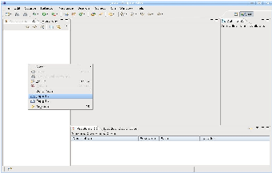
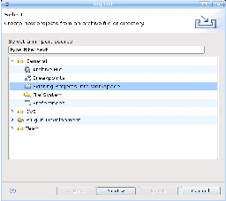
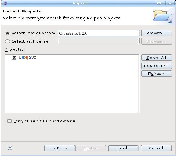
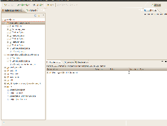
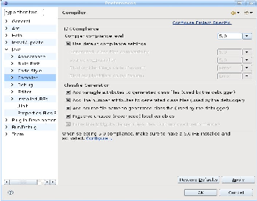
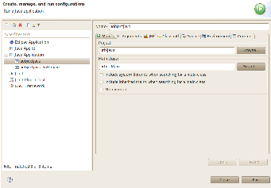
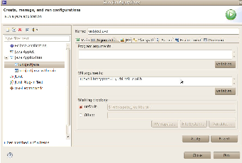

The UObject Java API can be used to add new remote objects written in Java to the urbiscript language, and to interact from Java with the objects that are already defined. We cover the use cases of interfacing higher-level components (voice recognition, object detection…) with Urbi using Java.
The Java API defines the UObject class. To each instance of a Java class deriving from UObject will correspond an urbiscript object sharing some of its methods and attributes. The API provides methods to declare which elements of your object are to be shared. To share a variable with Urbi, you have to give it the type UVar. This type is a container that provides conversion and setter member functions for all types known to Urbi: double, java.lang.String, the binary-holding structures urbi.UBinary, urbi.USound and urbi.UImage, list types urbi.UList and dictionaries urbi.Dictionary. This type can also read from and write to the urbi.UValue class. The API provides methods to set up callbacks functions that will be notified when a variable is modified or read from urbiscript code. Instance methods of any prototype can be made accessible from urbiscript, providing all the argument types and the return type can be converted to/from urbi.UValue.
The UObject Java API has the following limitations:
UObjects can be compiled easily directly with the javac compiler, then you can create JAR archives using the jar tool.
In the following sections, we will try to create an uobject jar archive named ‘machine.jar’ from a set of two files (‘Machine.java’, ‘UMachine.java’).
In what follows, urbi-root denotes the top-level directory of your Urbi SDK package, see Section 13.2.
To compile your UObject you need to include in the classpath ‘liburbijava.jar’:
$ javac -cp urbi-root/share/sdk-remote/java/lib/liburbijava.jar:. \
Machine.java UMachine.java
$ jar -cvf machine.jar UMachine.class Machine.class
added manifest
adding: UMachine.class
adding: Machine.class
Then to run your uobject, you need to call java. We provide a main class called urbi.UMain in the ‘liburbijava.jar’ archive. You can use this class to start your UObjects. This class takes the names of your uobjects jar files as argument. You also need to specify the lib directory of the Urbi SDK into java.library.path:
$ java -Djava.library.path=urbi-root/lib \
-cp urbi-root/share/sdk-remote/java/lib/liburbijava.jar \
urbi.UMain ./machine.jar
urbi-launch: obeying to URBI_ROOT = /usr/local/gostai
UObject: Urbi version 3.x.y
UObject: Remote Component Running on 127.0.0.1 54000
Kernel Version: 0
[LibUObject] Registering function UMachine.init 1 into UMachine.init from UMachine
[LibUObject] Pushing UMachine.init in function
umake-java can be used to compile Java UObjects. It will produce a JAR archive that you can use with urbi-launch-java.
You can give it a list of files to compile:
or directories in which C++ sources are looked for:
or finally, if you give no argument at all, the sources in the current directory:
To run your UObject then use urbi-launch-java (see Section 19.6):
$ urbi-launch-java machine.jar
urbi-launch: obeying to URBI_ROOT = /usr/local/gostai
UObject: Urbi version 3.x.y
UObject: Remote Component Running on 127.0.0.1 54000
Kernel Version: 0
[LibUObject] Registering function UMachine.init 1 into UMachine.init from UMachine
[LibUObject] Pushing UMachine.init in function
Let’s illustrate those concepts by defining a simple object: adder. This object has one variable v, and a method add that returns the sum of this variable and its argument.
public class Adder extends UObject // must extends UObject
{
/// Register the class within urbi
static { UStart(Adder.class); }
/// Declare a variable v that will be accessible in Urbi
private UVar v = new UVar ();
/// the class must have a single constructor taking a string
public Adder (String s)
{
super (s);
/// Bind the variable v to Urbi
UBindVar (v, "v");
/// Initialize our UVar v to some value
/// (we choose 42 :)
v.setValue(42);
/// Bind the function add to Urbi
UBindFunction ("add");
}
/// Our method.
public double add (double rhs)
{
/// Return the value of our UVar v (converted to double)
/// plus the value of the argument of the function.
return v.doubleValue () + rhs;
}
}
To bind the variables to Urbi, we use the function:
This function takes as argument the UVar variables, and the name of the UVar (because Urbi need to know what is the name of your variable). Once your variable is bound with UBindVar it will be accessible in Urbi.
If you run this UObject and test it from Urbi it gives:
[00000102] *** Urbi version 3.x.y
Adder;
[00006783] Adder
Adder.v;
[00010871] 42
Adder.add(-26);
[00025795] 16
Adder.add(-2.6);
[00035411] 39.4
To summarize:
When you start an Urbi server, an object of each class registered with UStart is created with the same name as the class. New instances can be created from Urbi using the new method. For each instance created in Urbi, a corresponding instance of the Java object is created. You can get the arguments passed to the constructor by defining and binding a method named init with the appropriate number of arguments.
For example let’s add an Urbi constructor to our Adder class. We rewrite it as follow:
public class Adder extends UObject // must extends UObject
{
/// Register the class within urbi
static { UStart(Adder.class); }
/// Declare a variable v that will be accessible in Urbi
private UVar v = new UVar ();
/// Constructor
public Adder (String s)
{
super (s);
UBindFunction ("init");
}
/// The init function is the constructor in Urbi. Here it takes
/// one argument that we use to initialize the ’v’ variable.
/// The init function must return an int of value 0
/// if all went OK.
public int init (double v_init)
{
/// Bind the variable v to Urbi
UBindVar (v, "v");
/// Initialize our UVar v to the value given in the
/// constructor
v.setValue(v_init);
/// Bind the function add to Urbi
UBindFunction ("add");
return 0;
}
public double add (double rhs)
{
/// Return the value of our UVar v (converted to double)
/// plus the value of the argument of the function.
return v.doubleValue () + rhs;
}
}
Now v and add are bound only when instance of the Adder object are constructed. We have added an init constructor with one argument that we use to initialize the value of v. You can run this UObject and test it in Urbi to see the difference with the previous example:
[00000097] *** Urbi version 3.x.y
Adder;
[00010592] Adder
Adder.v;
[00013094:error] !!! 2.1-7: lookup failed: v
var a = Adder.new(51);
[00041405] object_13
a.v;
[00044742] 51
a.add(10);
[00054783] 61
To bind the functions to Urbi, you can use:
or one of the convenient version:
void UBindFunction (String method_name)
void UBindFunctions(String ... method_names)
void UBindFunction (Object obj, String method_name)
void UBindFunctions (Object obj, String ... method_names)
The first function takes as argument the object containing the function (currently static methods cannot be bound). The second argument is the name of the function you want to bind. The third argument is a list of the names if the types of the arguments. For example for the function add, in the previous Adder example, we could have used:
provided that, of course, the signature of the function was fixed to use an java.lang.Double instead of a simple double.
If in your UObject you have different names for each of your methods, then you can use the shorter versions of UBindFunction.
The functions you can bind must follow these rules:
You can register a function that will be called each time a variable is modified by calling UNotifyChange, passing either an UVar or a variable name as first argument, and a member function of your UObject as second argument (and optionally a String array containing the name of the types of the arguments). The prototype for UNotifyChange is:
void UNotifyChange(String var_name, String method_name, String[] args_name);
void UNotifyChange(String var_name, String method_name);
void UNotifyChange(UVar v, String method_name, String[] args_name);
void UNotifyChange(UVar v, String method_name);
The callback function can take zero or one argument: an UVar pointing to the UVar being modified. And the callback function must return an int (the value returned is currently ignored in the actual implementation) or nothing at all (void). The notifyChange callback function is always called after the variable value is changed.
Notify functions can be unregistered by calling the unnotify function of the UVar class.
The API provides two methods to have a function called periodically:
You can read or write any Urbi variable by creating an UVar passing the variable name to the constructor. Change the value by writing any compatible type to the UVar, and access the value by casting the UVar to any compatible type.
Note however that changes on the variable coming from Urbi code or an other module can take time to propagate to the UVar. You can read and write all the Urbi properties of an UVar by reading and writing the appropriate UProp object in the UVar.
The send function sends Urbi code to the server:
You can also use the call method to make an urbiscript function call:
// Java equivalent of urbiscript ’System.someFunc(12, "foo");’
call("System", "someFunc", new UValue(12), new UValue("foo"));
They are member functions of the UObject class.
We provide a main class, containing a main function, embedded in the ‘liburbijava.jar’ file. This main class, called urbi.UMain is responsible for the loading of the liburbijava native library, and also for the registering of your uobjects.
import liburbi.main.*;
public class Main
{
/// load urbijava library
static
{
System.loadLibrary("urbijava");
}
public static void main(String argv[])
{
UObject.UStart(MyUObject1.class);
UObject.UStart(MyUObject2.class);
// ...
UObject.main(argv);
}
}
Call System.loadLibrary("urbijava"); to load the liburbijava native library.
Note: when you call System.loadLibrary, java search for the library in the locations given in java.library.path. This special Java variable must be correctly set or you will get a loading error when you run your Java program. You can set this options giving: ‘-Djava.library.path=path to dir containing urbijava lib ’ to the Java VM running your program.
We provide two UObject examples under Eclipse. One uses urbi.UMain, the other provides its own main class.
We provide a sample Eclipse project configuration that you can import in Eclipse and use to create your own UObject Java.
We illustrate here how you can do this:




The Java project is loaded. You can see the jar containing the liburbi (‘liburbijava.jar’, storing the UObject Java API) which contains the Urbi package, and also see the sources of the example we provide. We put them in the package examples. You can inspire yourself from these examples to make your own UObjects. Here, we will see how to compile and run them in eclipse
If Eclipse complains about errors in the source code, it can be that your compiler compliance level is two low. You have to set the compiler compliance level to Java 5 at least (Windows/Preferences/Java/Compiler).

We provide a sample ‘uobjectjava.launch’ files that you can load in Eclipse to run the projects.

